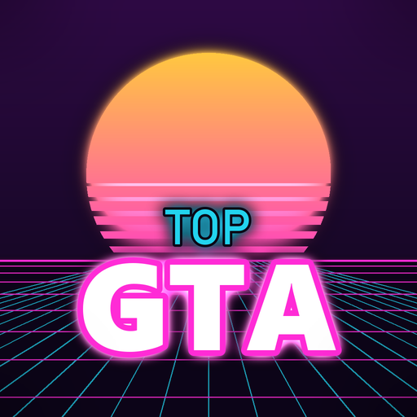

Términos del servicio
Última actualización: 19 de noviembre de 2026
1. Qué es TopGTA
TopGTA es una aplicación de uso personal que se ejecuta en el computador de su creador. Sirve para editar videos cortos y publicarlos en las cuentas que el propio creador conecta mediante las API oficiales de cada red social.
2. Uso permitido
Solo se publica contenido que el usuario tiene derecho a usar. Cada publicación la revisa y aprueba el usuario antes de enviarla. El usuario es responsable del contenido que publica y debe cumplir las normas de cada plataforma (TikTok, YouTube, Meta y X).
3. Cuentas conectadas
El usuario puede conectar y desconectar sus cuentas en cualquier momento. TopGTA solo usa los permisos que el usuario concede y únicamente para publicar los videos que aprueba.
4. Sin garantías
La herramienta se ofrece "tal cual", sin garantías. Las plataformas pueden cambiar o limitar sus API en cualquier momento.
5. Marcas
"GTA" y "Grand Theft Auto" son marcas de Take-Two Interactive. TopGTA es un proyecto de fans sin afiliación con Rockstar Games ni Take-Two.
6. Contacto
Mediante github.com/IngJames1992.
Terms of Service (English summary)
TopGTA is a personal tool that runs on its creator's computer to edit short videos and publish them, through official APIs, only to accounts the creator connects. Every post is reviewed and approved by the user, who is responsible for its content and for following each platform's rules. Accounts can be disconnected at any time. Provided "as is", without warranty. GTA is a trademark of Take-Two Interactive; TopGTA is an unaffiliated fan project.